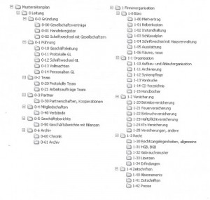

Ordnerstruktur und Aktenplan
Ergänzung Dezember 2023
Auch wenn die digitale Ablage auf einem Serverlaufwerk kein Zukunftsmodell für digitale Zusammenarbeit ist, kann es dennoch Sinn machen, noch Zeit in die Optimierung der Ordner- und Laufwerkstruktur zu investieren. Es kann möglich sein, dass in der Organisation noch keine andere technische Lösung vorhanden oder in Sicht ist. Aber auch in Vorbereitung auf künftige zeitgemäßere Lösungen ist eine Optimierung sinnvoll, weil man im Team erarbeitet, welche Dokumente fallen überhaupt an, wer soll Zugriff haben und es wird eine gemeinsame Sprache entwickelt. Das alles ist eine gute Vorarbeit für die Einführung eines DMS.
Ursprünglicher Artikel von 2012
Das Arbeiten mit Dokumenten und Informationen gelingt mit einem logischen Aktenplan, der die Ordnerstruktur abbildet, sehr viel leichter. Eine gute Datei und Dokumentenstruktur bedeutet Reduzierung der Suchzeiten, egal von wo und wie sie auf Ihre Dateien zugreifen. Das gilt sowohl für Einzelunternehmer und erst recht für Teams und teamübergreifende Zusammenarbeit.
Sollten Sie noch mit Papierdokumenten arbeiten, ist es sinnvoll, weitestgehend die gleiche Struktur für Ihre elektronischen Daten und Ihre Dokumente im Regal anzuwenden.
Ein gemeinsam in der Abteilung oder im Unternehmen erarbeiteter Aktenplan ist das Mittel der Wahl um das Chaos auf Laufwerken und Servern in Unternehmen zu beenden. Bevor Sie einen Aktenplan erstellen, müssen Sie zuerst eine Übersicht über die von Ihnen bearbeiteten Themen und Aufgaben erstellen. Hierfür gibt es ganz verschiedene Möglichkeiten, die in einem separaten Artikel dargestellt werden.
Der klassische Aktenplan gliedert sich in zehn Hauptgruppen. Diese Aufteilung hat den Vorteil, dass man ein Zehnersystem hat, das durchgängig einstellig ist (0-9). Bei der Zählung 1-10 gelingt das nicht. Manchem kommt dieses System vielleicht vertraut vor. Der Kontenplan in der Buchhaltung ist in gleicher Weise gegliedert. Mehr als zehn Hauptgruppen sollten vermieden werden. Das wird leicht unübersichtlich.
Wenn Sie häufiger mit Ordnern oder Dateien arbeiten, die sich in weiter verzweigten Unterordnern befinden, können Sie sich einige Klicks sparen, indem Sie sich eine Verknüpfung zu der Datei oder dem Ordner auf den Desktop legen. Es können auch Ordner mit Verknüpfungen auf dem Desktop angelegt werden (Windows). So kann in einem Team jeder seine am häufigsten benutzen Ordner mit zwei Klicks erreichen, ohne dass die gemeinsame Struktur darunter leidet oder angepasst werden muss.
Professionell nummerierte Ordner, sind auch ein gutes Mittel, dem „Ordner-Wildwuchs“ vorzubeugen. Wenn Mitarbeiter nicht wissen wohin mit den Daten, legen Sie häufig einfach einen neuen Ordner an. Wenn die Ordner jedoch erkennbar systematisiert sind, ist die Hemmschwelle größer und Mitarbeiter geben sich eher Mühe, den Bezug zur bestehenden Struktur zu erkennen.
Wenn Sie Ihre Ordnerthemen kennen, legen Sie die zehn Hauptgruppen fest, die für Ihr Büro wichtig sind, und zwar von 0-9. Mit der Nummerierung können Sie gut die Reihenfolge im Explorer bei Windows oder im Finder beim Mac festlegen. Entweder nummerieren Sie nach Wichtigkeit der Ordner oder nach Zugriffshäufigkeit. In größeren Unternehmen, wenn mehrere Personen auf die Ordner und Dateien zugreifen, sollten bei der Erstellung der Ordnerstruktur auch die Zugriffsberechtigungen bedacht und möglichst einfach gehalten werden. Das ist besonders wichtig wenn es darum geht, den Zugriff auf die Unternehmensdaten über das Internet zuzulassen.
Jeder Aktenplan ist unternehmens- oder abteilungsindividuell. Daher gibt es kein „richtig“ oder „falsch“. Einige Grundregeln sind dennoch zu beachten:
Regeln für die Ordnerstruktur und Aktenplan:
- Nummerierung der Hauptordner mit 0-9
- Nummerierung der Unterordner ebenfalls 0-9
- kein Unterordner soll so heißen, wie der Oberordner
- konsistente Beschriftung bezüglich des Datums
- Ordner wie „Sonstiges“, „Diverses“ oder „Allgemein“ gibt es nicht, sie sind Verlegenheitslösungen, verleiten zu Bequemlichkeit und führen zur Verwirrung
- alle Unterordner im Ordner Archiv müssen mit Jahres- und/oder Monatsangaben beschriftet sein
Ein Aktenplan könnte beispielsweise in einem Unternehmen folgende Hauptgruppen haben:
0-Leitung
1-Firmenorganisation
2-Finanzen
3-Personal
4-Einkauf
5-Kunden
6-Projekte
7- frei
8-Vertrieb
9-Öffentlichkeitsarbeit
Die dazugehörigen Unterordner könnten z.B. so aussehen:

Wenn Sie die Ordnerstruktur entwickelt haben, ist es sinnvoll, die Ordner im Explorer anzulegen und die Struktur allen Mitarbeitern vorzustellen, bevor Sie die Ordner füllen. Außerdem sollte die Struktur im Organisationshandbuch aufgenommen werden oder – im Falle von Papierdokumenten – im Aktenschrank aufgehangen werden.
In manch einem Team oder in der Zusammenarbeit mit Kooperationspartnern oder externen Mitarbeitern kann die Ordnerstruktur sogar ein einfaches Mittel sein um eine Prozessstruktur abzubilden. Wenn ein Mitarbeiter eine Datei, einen Vorgang abgearbeitet hat verschiebt er die Datei in den nächsten Ordner für den nächsten Bearbeiter. Der weiß immer, wenn in diesem Ordner Dateien liegen, was damit zu tun ist, ohne dass Erklärungen oder Hin-und Herschicken nötig ist. Der Prozess muss natürlich vorher mit allen Beteiligten abgesprochen und am besten auch visualisiert werden.
In vielen Unternehmen hat sich auf den Laufwerken und Festplatten im Laufe der Zeit regelrechter Datenmüll angesammelt. Es ist mühevoll und verschwendete Zeit alle alten Dateien anschauen. Sinnvoller ist es, die alten Dateien in ein Archiv auf einem Laufwerk zu verschieben (natürlich mit Jahreszahlen versehen) und nur eine Leseberechtigung für dieses Laufwerk zu erteilen. Es werden dann nur die Dateien in das neue System übernommen, mit denen man tatsächlich aktuell auch noch arbeitet. Das bedeutet in einer Übergangsphase leider noch Suchen, aber das ist immer noch schneller, als alle alten Dateien anzusehen im Akkord zu entscheiden und neu zuzuordnen. Man sollte dabei auch nie vergessen, dass 80% aller Dokumente und Dateien, die abgelegt wurden nie wieder in die Hand genommen/benötigt werden.
Lesen Sie nächste Woche: Tipps, Tricks und Regeln für die Dateibeschriftung!
Hier können Sie auch ein Seminar für den Einstieg buchen: Workshop Ordner- und Laufwerkstruktur
Weitere Artikel

Puffer sichern Flow
Es wird allerhöchste Zeit, sich von der Idee, dass nur wer am Limit arbeitet, effizient sei, zu verabschieden. Unter Volllast, ganz ohne Puffer zu arbeiten ist eine „gute“ Voraussetzung für Unzuverlässigkeit, Fehler …

Die Kollaboration in einem internationalen Team organisieren
Für erfolgreiche Kollaboration im Team sind viele Bausteine nötig. Natürlich müssen alle das Ziel kennen, der Teamspirit muss stimmen, aber es muss auch die tägliche Zusammenarbeit im Team „flutschen“. Das heißt, die …